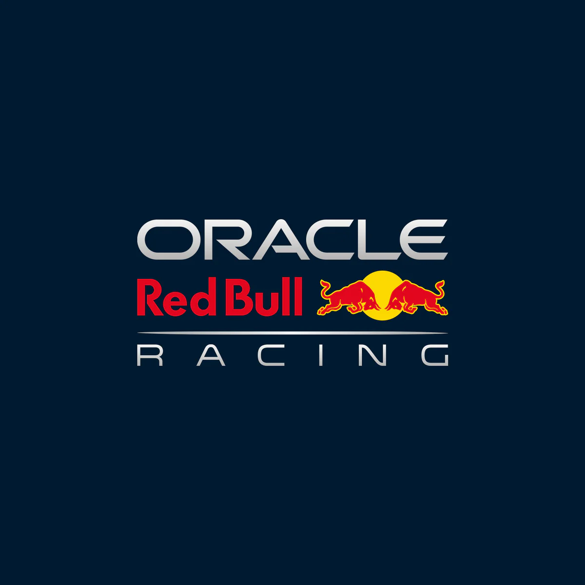
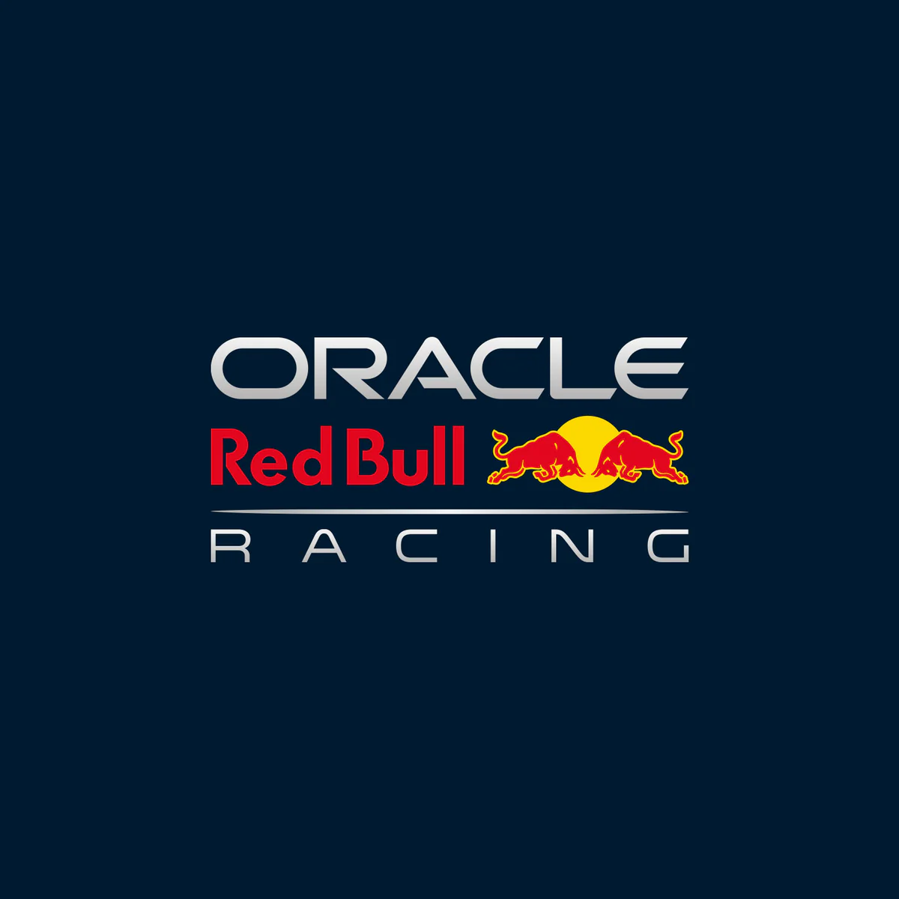

Takım logolarına tıklayarak takımların rasmi F1 sitelerine gidebilirsiniz.
 


Son yılların en baskın takımı, üstün aerodinamik yapısıyla öne çıkar.
Formula 1’in en köklü ve efsanevi takımıdır, İtalya merkezlidir.
Modern çağın en dominant takımlarından biri olarak birçok şampiyonluk kazanmıştır.
İngiltere merkezli tarihi bir takımdır, son yıllarda yeniden zirveye oynamaktadır.
Geçmişte birçok şampiyonluk yaşamış tarihi bir İngiliz takımıdır.
Red Bull’un kardeş takımıdır, genç sürücülere fırsat tanır.
Lüks marka imajını pistte de başarıya dönüştüren İngiliz takımıdır.
Amerikan Formula 1 takımıdır, dayanıklılığıyla bilinir.
İsviçre merkezli takımdır, 2025’te yeni tasarımıyla dikkat çeker.
Fransız üretici Renault’nun Formula 1 markasıdır.